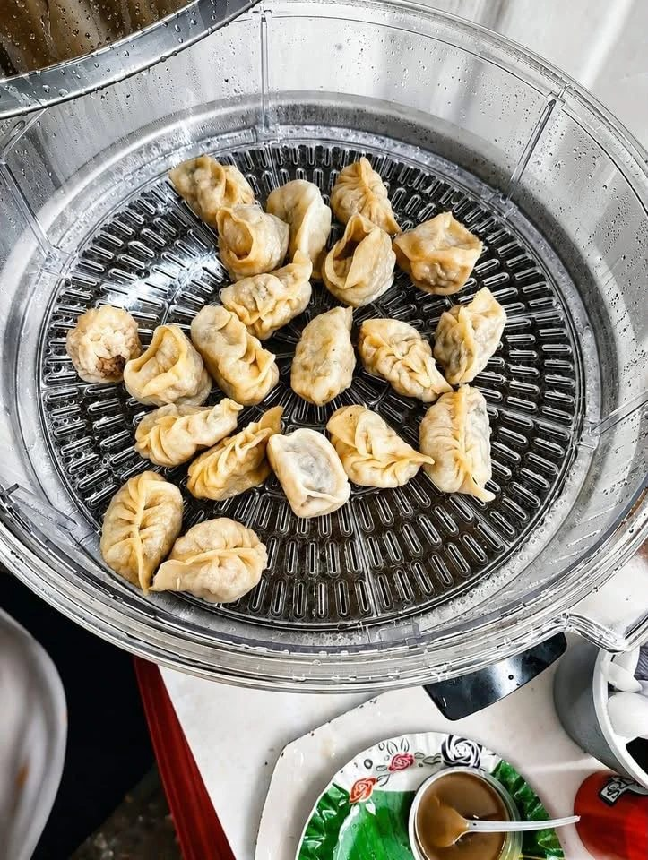
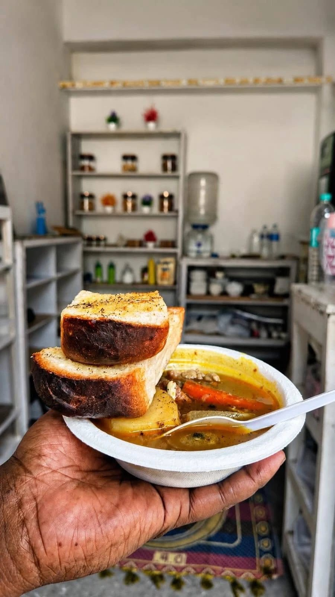
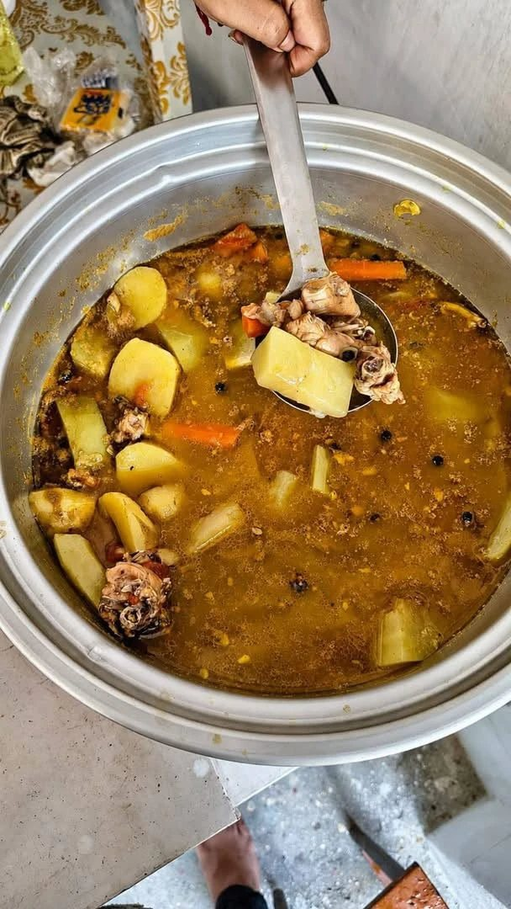
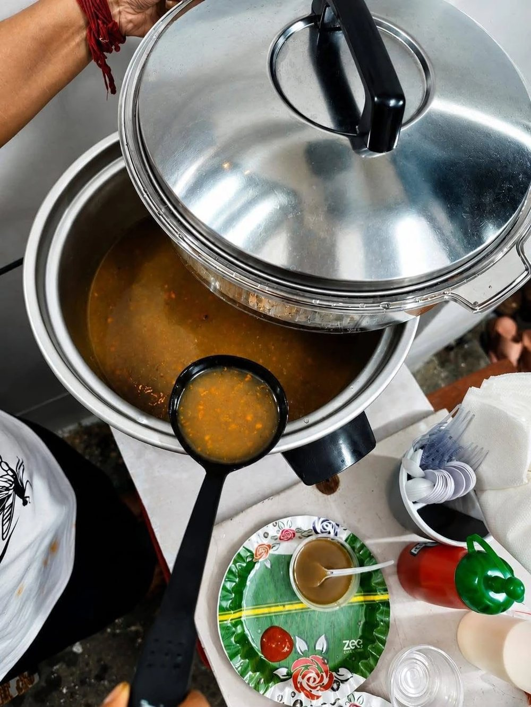
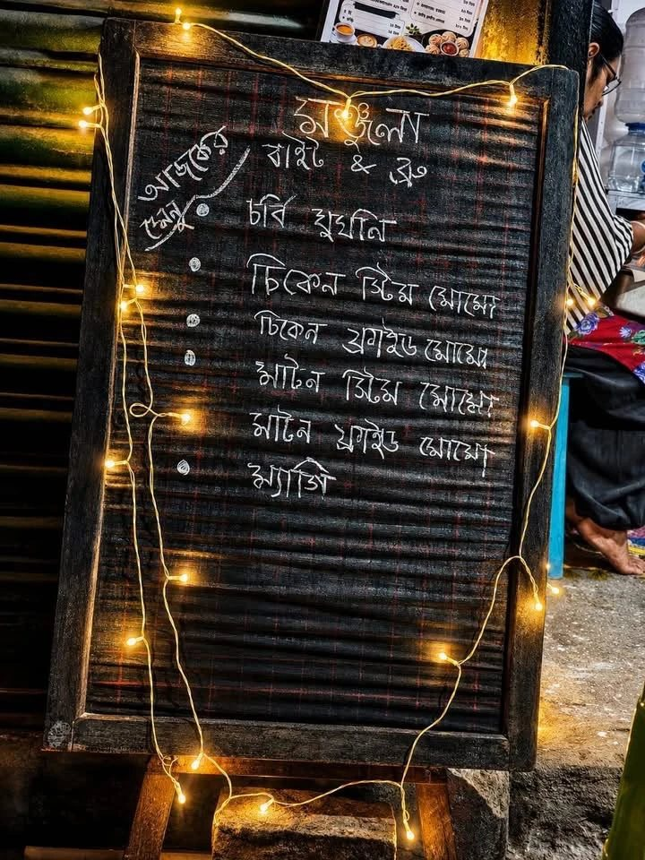

দোকানের নিজের ছবি The shop's own pictures
দোকানের ভিতরে
Inside the shop
স্টিমারের ঢাকনা তোলার মুহূর্ত, হাঁড়ির ভিতরের স্টু, ফুটপাথের স্লেটে টুনি লাইট — দোকানেরই তোলা ছবি, যেমনটা সত্যি দেখায়।
The lid coming off the steamer, the inside of the stew pot, the fairy lights round the slate on the pavement. The shop's own photographs, and what it actually looks like.
এখানে কোনও ছবি বানানো নয় — সবই ক্যামেরায় তোলা। মেনুর পাতায় খাবারের যে ছবিগুলো আছে, সেগুলো আলাদা করে বানানো, আর সেখানেই তা লেখা আছে।
Nothing on this page is generated — every picture here came out of a camera. The dish pictures on the menu are made images, and they say so where they appear.
দোকানের ছবিPhotographs
যেমনটা দেখায়
What it actually looks like
দোকানেরই তোলা ছবি — কোনওটাই বানানো নয়, সাজানোও নয়। স্টিমার ভর্তি মোমো, হাঁড়িভরা স্টু, দেওয়ালের সাইনবোর্ড, আর ফুটপাথের বোর্ড।
Photographs taken in the shop. Nothing here is generated and nothing is styled — a steamer full of momos, a pot of stew, the signs on the wall, the board on the pavement.





